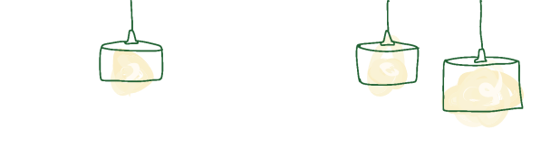

LINEでお問合わせ
LINEでお問合わせ メールでお問合わせ
メールでお問合わせ
いつでも、なんでも
聞いてください
こんなことで質問していいのかな？
知識が無さ過ぎて怒られないかな？
そんな不安は要りません！
あなたの味方になる、税理士事務所です。


いつでも、なんでも
聞いてください
こんなことで質問していいのかな？
知識が無さ過ぎて怒られないかな？
そんな不安は要りません！
あなたの味方になる、税理士事務所です。
新着情報 |
|---|
| 22/05/25 | プレ保育「ちゅーりっぷひろば」開催のお知らせです。令和５年度に入園予定の方を対象に、6月7日10時～（1時間程）を予定しています。 お申し込みは電話にて（052-412-5555）締切は5月31日です。 |
| 22/05/25 プレ保育「ちゅーりっぷひろば」開催のお知らせです。令和５年度に入園予定の方を対象に、6月7日10時～（1時間程）を予定しています。 お申し込みは電話にて（052-412-5555）締切は5月31日です。 |
| 22/05/27 | プレ保育「ちゅーりっぷひろば」開催のお知らせです。令和５年度に入園予定の方を対象に、7月4日(月)10時～（1時間程）を予定しています。 お申し込みは電話にて（052-412-5555）締切は6月27日(月)です。 |
| 22/05/27 プレ保育「ちゅーりっぷひろば」開催のお知らせです。令和５年度に入園予定の方を対象に、7月4日(月)10時～（1時間程）を予定しています。 お申し込みは電話にて（052-412-5555）締切は6月27日(月)です。 |
--.

日々の生活や行事を通して
たくさん考え、経験を重ねていく子どもたちを愛情を持って見守ります。
みずから学ぶこと、自分の力でやりきることを大事にし、
子どもたちの成長を見守る保育を行います。
日々の生活や行事を通して
たくさん考え、経験を重ねていく
子どもたちを愛情を持って見守ります。
みずから学ぶこと、
自分の力でやりきることを大事にし、
子どもたちの成長を見守る保育を行います。

×

×

緑豊かな園庭からは、毎日子どもたちの笑い声が聞こえます。体を動かし、のびのびと遊びます。
自分を表現することや、お友達に気持ちを伝えることなど、毎日の生活の中で考え、成長しています。
水泳練習や１泊２日の園外宿泊保育など、園での経験をきっかけに成長する姿を見ていただけます。
遊ぶ

緑豊かな園庭からは、毎日子どもたちの笑い声が聞こえます。体を動かし、のびのびと遊びます。
学ぶ

自分を表現することや、お友達に気持ちを伝えることなど、毎日の生活の中で考え、成長しています。
育つ

水泳練習や１泊２日の園外宿泊保育など、園での経験をきっかけに成長する姿を見ていただけます。
 |
 |
|
 |
徒歩で登園 集合場所から教員の引率で、園児同士で手をつなぎ徒歩で登園します。体力がつき、交通ルールも学べ、年下の子への思いやりの心も育ちます。 |
|
| 朝活・主活動 全園児登校後、エアロビで体を動かします。 |
 |
|
 |
昼食 週4日が給食、週1日がお弁当です。お友だちと楽しく食事をします。 |
|
| 園庭で自由遊び 元気いっぱいに外で遊びます。下園の準備も行います。 |
 |
|
| 帰りの会・徒歩で下園 教員引率の元、下園します。 |

集合場所から教員の引率で、園児同士で手をつなぎ徒歩で登園します。
体力がつき、交通ルールも学べ、年下の子への思いやりの心も育ちます。

全園児登校後、エアロビで体を動かします。その後、主活動の時間が始まります。

週4日が給食、週1日がお弁当です。
お友だちと楽しく食事をします。

元気いっぱいに外で遊びます。
下園の準備も行います。

教員引率の元、下園します。
希望者は17:30までの預かり保育を
利用できます。


※行事開催月はカレンダーによって変動します。
 |
 |
| 水泳特訓 年中・年長対象 |
サマーアドベンチャー 年長対象／自由参加 |
|---|---|
年中クラスは、水中での目開き。年中クラスはクロールで1 0 メートル泳ぐことが最終目的です。 |
8 月下旬に、一泊で郡上八幡へ出かけます。鍾乳洞見学、マスつかみ、花火大会、肝試し、山登りや宝探しなど、一生の思い出になるようなたくさんの冒険をします。 |
 |
 |
 |
| 習字 年長対象／基本的に週１回 |
体育 年少・年中・年長対象／週１回 |
お茶会 年少・年中・年長対象 |
|---|---|---|
毛筆で、ひらがな2 文字の単語を、年間1 0 種類ほど書き上げます。 |
1 学期は5 月～ プール開きまで |
お寺の会室にて基本的な作法を習います。（ 抹茶ではなくお番茶です） 集中力・忍耐力を養えます。 |
年中クラスは、水中での目開き。年中クラスはクロールで1 0 メートル泳ぐことが最終目的です。
目標に向かって頑張る、ひとりひとりの成長のステップを大事にします。
8 月下旬に、一泊で郡上八幡へ出かけます。鍾乳洞見学、マスつかみ、花火大会、肝試し、山登りや宝探しなど、一生の思い出になるようなたくさんの冒険をします。
毛筆で、ひらがな2 文字の単語を、年間1 0 種類ほど書き上げます。
集中力・忍耐力を養えます。
1 学期は5 月～ プール開きまで
2 学期は運動会後～ 1 2 月上旬まで
3 学期は持久走を行います。
お寺の会室にて基本的な作法を習います。（ 抹茶ではなくお番茶です）
集中力・忍耐力を養えます。
学年によって年3 ～ 6 回行います。
※コロナウイルス感染症の流行により、時期によっては実施できない授業もあります。
 |
 |
園地面積1,703平方m 515坪／運動場面積1,131平方m 342坪 |
2つの園庭で伸び伸びと遊ぶことが出来ます。 |
 |
 |
 |
屋上にはプールがあります。 |
遊戯室にボルダリングウォールを |
園グラウンドはR 2 年６ 月から芝生 |
園地面積1,703平方m 515坪
運動場面積1,131平方m 342坪
2つの園庭で伸び伸びと遊ぶことが出来ます。
屋上にはプールがあります。
遊戯室にボルダリングウォールを設置しました。
園グラウンドはR２年６月から芝生を養成しています。
「入園願書」に必要事項を記入し入園金及び入園手数料を添えてお申込み下さい。
検定料 5 , 0 0 0 円
※ 願書受付は1 1月1日より順次受付けておりますが定員になり次第、締め切りますのでお早目にお申し込み下さい。
年度途中に満３歳を迎えるお子さんについては事前に入園面接を行い、4期に分かれ入園いただきます。
※ 定員有、人数により抽選
| 4 ・5 月生まれ | 6 月入園 |
| 6 ・7 ・8 月生まれ | 9 月入園 |
| 9 ・1 0 月生まれ | 1 1月入園 |
| 1 1 ・1 2 月生まれ | 1 月入園 |
PTA会費1,000円
給食費350円× 給食回数
※保育料は国からの補助により自己負担0円
原則として週に5日
（ 月・火・水・木・金 ）
9時～15時まで
※行事等で変更あり
給食：週４回（ 月・火・木・金 ）
弁当：週1回（ 水 ）
※短縮・行事等で変更あり
月～金の通常保育終了時間から17時30分まで、年少児は6月～。満3歳児の預かり保育はありません。
１回/ 500円
月預かり/ 5,000円
※短縮・行事等で変更あり


〒453-0863
名古屋市中村区八社1-145
TEL 052-412-5555
市バス
系統名＜名駅12＞「城前」停留所より
徒歩5分
駐車場有（職員にお声がけください）
〒453-0863
名古屋市中村区八社1-145
TEL 052-412-5555
市バス
系統名＜名駅12＞「城前」停留所より
徒歩5分
駐車場有（職員にお声がけください）